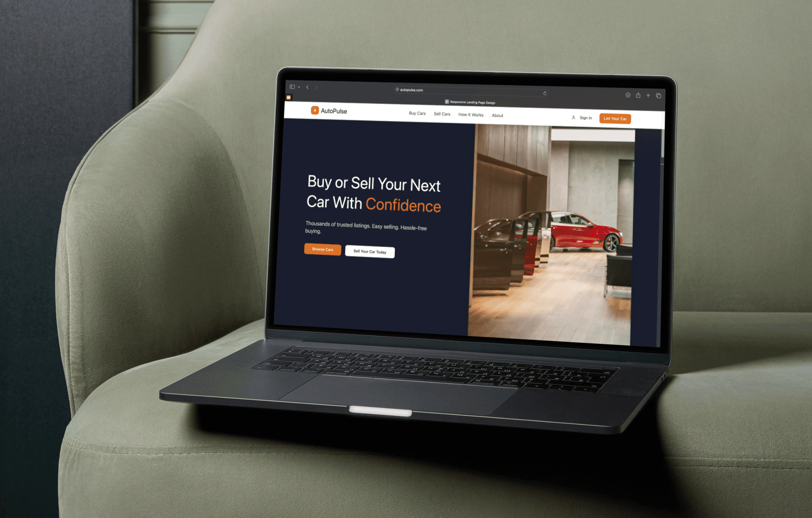
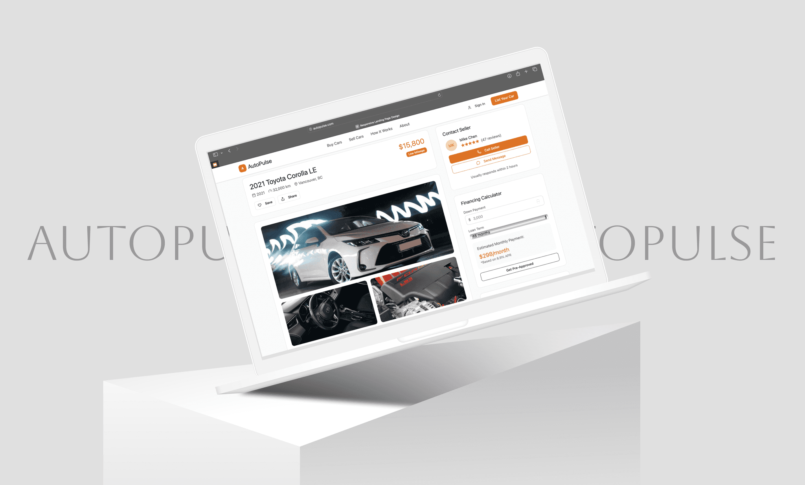
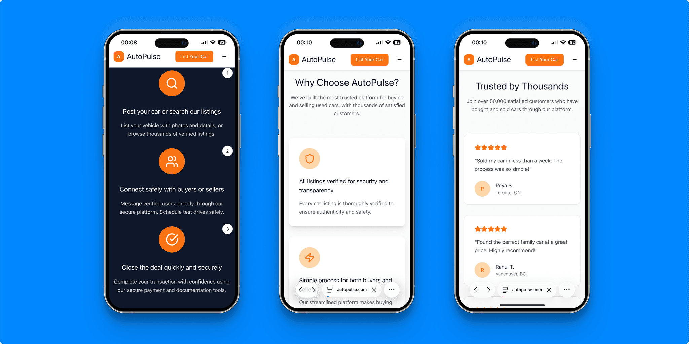
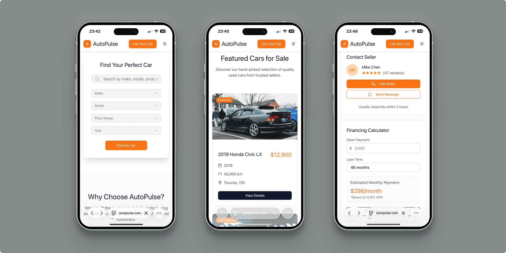

This project is a recreation and rewording of an actual landing page design I developed for a car sales company, completed under a strict non-disclosure agreement (NDA). The primary objective was to design a conversion-focused, user-centric landing page that simplifies and enhances the experience of buying and selling used cars, while building trust and increasing lead generation.



Research & Discovery
Initial research focused on understanding the target audience's needs—primarily individual sellers looking for a simple process to list their cars and buyers seeking trusted, verified listings with comprehensive search capabilities. Competitor analysis in the automotive sales space helped identify gaps and opportunities to improve user trust and ease of navigation. Key pain points addressed included complex or cluttered interfaces, lack of transparency in listings, and insufficient guidance through the buying/selling process.
Design Approach:
The landing page was designed with a clean, modern aesthetic to impart professionalism and trustworthiness. The color palette of dark navy, white, and bright orange was selected to evoke confidence and create clear visual calls to action.
- Hero Section: Utilized a strong headline “Buy or Sell Your Next Car With Confidence” with dual CTAs to address both customer segments immediately.
- Search Functionality: Provided a robust search bar with essential filters (make, model, price, year, mileage) enabling users to quickly find relevant vehicles.
- Value Proposition: A “Why Choose Us” section articulates the company’s unique benefits such as verified listings, a simplified user experience, and responsive customer support.
- Featured Listings: Displayed a curated selection of available cars with clear pricing and key details, encouraging deeper user engagement.
- How It Works: A visually engaging three-step process guide reinforced the platform’s simplicity and transparency.
- Trust Elements: Integrated real customer testimonials and partner logos to enhance credibility and reduce buyer hesitation.
- Footer and Navigation: Designed for intuitive navigation with clear access to important pages, contact information, and social channels.
UX Considerations:
Mobile-first design principles were strictly followed to ensure an optimized experience on all devices. Micro-interactions on buttons and listings provide subtle feedback, enhancing engagement without overwhelming users. The layout emphasizes clarity with ample white space, consistent typography, and strategic visual hierarchy.
Expected Business Impact
The design aims to increase user trust and reduce barriers to buying and selling cars, ultimately improving lead quality and conversion rates. Streamlining the search and listing processes is expected to shorten decision-making time and increase platform usage. The balanced combination of emotional appeal (through testimonials and trust signals) and functional clarity supports higher user satisfaction and retention.
Conclusion
This project represents a comprehensive approach to crafting a user-friendly, trustworthy, and conversion-driven landing page tailored to the used car sales industry. Through strategic design and user experience decisions, the platform is positioned to effectively meet the needs of both buyers and sellers while driving measurable business growth.